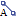

挤出窗格
挤出窗格是用于创建二维模型并划分网格、再将其挤出入第三维的交互式用户界面。每个模型在单独的挤出集合中创建，窗格中可包含多个集合。
挤出窗格提供模型的两种视图：构造视图和挤出视图。构造视图用于绘制二维形状并划分网格；挤出视图用于指定挤出阶段。
当三维模型准备好后，可将其发送到块体构建窗格以进一步修改，也可立即生成网格单元并在模型窗格或绘图窗格中查看。
在操作模型时，大多数操作会自动转换为命令并发送到 i 控制台（Console） 窗格。有关命令语法的信息见命令参考（挤出命令（Extrude Commands）、挤出 FISH（Extrude FISH））。
挤出窗格可通过菜单项 打开。
工作流程
要创建新的挤出集合，请单击标有“新建挤出…”的工具按钮（）并输入集合名称。随后您可能希望使用“导入背景图像…”工具按钮（ ）加载背景图像（例如来自 .DXF、.STL、.PNG 文件），或直接使用点-边工具（
）加载背景图像（例如来自 .DXF、.STL、.PNG 文件），或直接使用点-边工具（ ）创建点和边。如果选择导入背景图像，您可以沿图像中的曲线手动创建边来描绘它们，也可以使用“自动边工具”（
）创建点和边。如果选择导入背景图像，您可以沿图像中的曲线手动创建边来描绘它们，也可以使用“自动边工具”（

）自动创建一组可描绘所有曲线的边。最后一个选项仅在导入 CAD 几何（而非栅格图像）时可用。“按转折角选择边”工具（ ）允许您选择多条边，其中每两条边之间的夹角都小于指定的转折角。您可以使用该工具或手动选择边，然后通过“合并所选边”工具按钮（
）允许您选择多条边，其中每两条边之间的夹角都小于指定的转折角。您可以使用该工具或手动选择边，然后通过“合并所选边”工具按钮（ ）将它们合并为单条曲线边。“控制点工具”（
）将它们合并为单条曲线边。“控制点工具”（ ）可用于处理已含控制点的曲线边，或将直线边整形为曲线或折线。最后，您可以使用“块体划分工具”（）创建具有结构化或非结构化二维网格的块体，或使用“自动块体划分工具”（）自动用网格填充集合中所有闭合多边形。单击“块体划分工具”旁边的三角形图标（
）可用于处理已含控制点的曲线边，或将直线边整形为曲线或折线。最后，您可以使用“块体划分工具”（）创建具有结构化或非结构化二维网格的块体，或使用“自动块体划分工具”（）自动用网格填充集合中所有闭合多边形。单击“块体划分工具”旁边的三角形图标（ ）可选择网格划分参数。
）可选择网格划分参数。
当在构造视图中创建了块体后，可转到挤出视图（ ），使用点-边工具（）创建挤出阶段。
可使用“自动网格划分”工具（）在当前视图中设置自动的网格单元尺寸或网格单元数量。此外，您可以随时为模型的各部分指定自己的分组名，尽管程序会自动为对象分配其自己的分组。
），使用点-边工具（）创建挤出阶段。
可使用“自动网格划分”工具（）在当前视图中设置自动的网格单元尺寸或网格单元数量。此外，您可以随时为模型的各部分指定自己的分组名，尽管程序会自动为对象分配其自己的分组。
模型设置完成后，您可以使用“创建块体构建…”工具（）将其发送到块体构建窗格，或使用“挤出”工具按钮（ ）创建网格。
）创建网格。
主题
| 这些内容对您有帮助吗？… 版权与免责声明 |
FLAC3D © 2019, Itasca | 原文更新于 2020 年 10 月 8 日 |